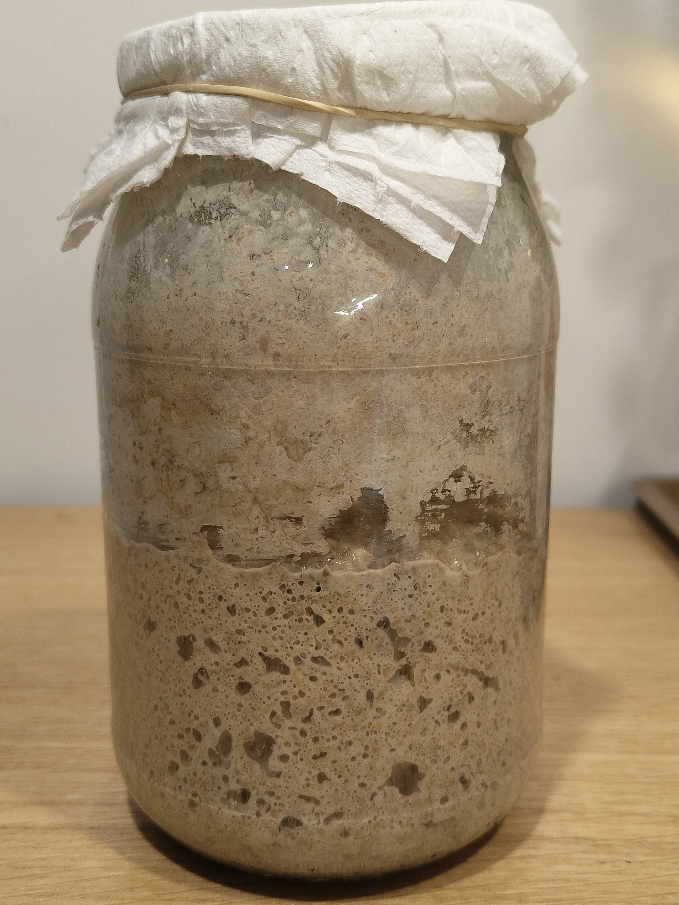

JAK ZROBIĆ ŻYTNI ZAKWAS NA CHLEB?
Raz przygotowany zakwas będzie wam później służyć przez wiele miesięcy czy lat. Proces dojrzewania zakwasu zajmuje około 5 dni. Wystarczy że poświęcicie mu 3 do 5 minut co około 12 godzin. Cała magia odbywa się w litrowym słoiku przy waszym minimalnym udziale. Wszystko co musicie zrobić to zadbać o to, aby wasz zakwas nie był głodny, było mu ciepło i miał czysty słoik. Zakwas stosuje się do spulchnienia i zakwaszenia ciasta. To nic innego jak sfermentowana mąka. W trakcie jego dojrzewania rozwijają się w nim naturalnie żyjące na ziarnach zbóż drożdże oraz bakterie wytwarzające kwas mlekowy i kwas octowy. W trakcie tego procesu fermentacji dochodzi do rozkładu złożonych węglowodanów znajdujących się w mące. W tym procesie bakterie i drożdże współdziałają ze sobą: drożdże dostarczają niezbędnych do rozwoju bakterii witamin zaś bakterie mlekowe zakwaszają środowisko, co sprzyja rozwojowi drożdży. Dodanie zakwasu do mąki powoduje że powstały kwaśny zaczyn ulega szybkiej fermentacji, drożdże fermentują wytwarzając dwutlenek węgla, dzięki któremu pieczywo wyrasta i zyskuje gąbczastą strukturę. Wspomniane wcześniej bakterie wytwarzają kwas octowy i mlekowy które nadają pieczywu pożądany smak i zapach.
PORADY:
Zakwas najlepiej zrobić z mąki żytniej razowej typ 2000 ponieważ obecne w niej zewnętrzne części ziarna sprzyjają rozmnażaniu się bakterii powodujących fermentację, ale doskonale wychodzi również z mąki typ 750. Ostatnio nie mając żytniej mąki razowej przygotowaliśmy z powodzeniem zakwas z maki żytniej typ 750 i to on stanowi teraz fantastyczny starter do wypiekanych przez nas chlebów. Zakwas żytni stosowany jest zarówno przy wyrabianiu chleba żytniego jak i mieszanego oraz pszennego.
- 500 g mąki żytniej razowej typ 2000 lub żytniej typ 720
- 500 ml wody
Składniki:
- WYSOKI SŁOIK – litrowy lub większy
- JAŁOWĄ GAZĘ
- GUMKĘ RECEPTURKĘ lub kawałek sznurka 
Będziecie również potrzebowali:
SPOSÓB PRZYGOTOWANIA:
Dokładnie myjemy i wygotowujemy słoik (3 minuty gotowania). Wyparzamy również łyżkę którą będziemy zakwas mieszać (tę zasadę stosujemy tylko na początku przygotowywania zakwasu). Przygotowujemy jałową gazę oraz gumkę recepturkę.
Co 12 godzin do słoika dodajemy 50 g mąki + 50 ml letniej wody, całość dokładnie mieszamy, przykrywamy słoik gazą i odstawiamy w ciepłe miejsce.
Powstała papka ma mieć konsystencję gęstej śmietany.
W kolejnych dniach, bezpośrednio po dokarmianiu, w zakwasie będą przyśpieszały procesy fermentacji i zakwas będzie "rósł" w słoiku czyli zwiększał swoją objętość. Będą pojawiały się w nim wtedy coraz liczniej pęcherzyki gazu. W kolejnych dniach dojrzewania zakwasu będziecie to mogli zaobserwować coraz wyraźniej. Przed każdym kolejnym dokarmianiem zakwas zazwyczaj lekko opada tracąc na swojej objętości (również zamieszanie zakwasu łyżka sprawi, że opadnie, co wykorzystuje się nieraz gdy zakwas gwałtownie rośnie i próbuje "uciec" nam ze słoika).
Nie należy przechowywać zbyt dużej ilości zakwasu na chleb, bo trzeba go dokarmiać stosując proporcje 1:1:1 czyli 1 miarka zakwasu : 1 miarka mąki : 1 miarka wody. Im mamy więcej zakwasu w słoiku - tym większą ilością mąki i wody musimy go dokarmiać (inaczej będzie "głodny" co rozpoznamy po intensywnym octowym zapachu). Z tego powodu wiele receptur na przygotowanie zakwasu podaje konieczność wyrzucenia połowy zakwasu przy jego każdorazowym dokarmianiu.
Słoik z dojrzewającym zakwasem przykrywamy gazą, którą mocujemy na szyjce słoika gumką recepturką i odstawiamy w ciepłe miejsce (optymalna temperatura to 25 - 30 stopni Celsjusza). My stawiamy nasz słoik blisko kaloryfera. Dobrym miejscem jest również blat w pobliżu kuchenki, na której akurat coś gotujecie.Pamiętajcie, że zakwasu nie można przechowywać w szczelnie zamkniętym naczyniu; on potrzebuje powietrza.
Jeśli nie macie gazy to do przykrycia słoika wykorzystajcie kawałek wygotowanej wcześniej ściereczki bawełnianej lub kawałek papierowego ręcznika. Zaglądajcie co jakiś czas do zakwasu, jeśli zauważycie, że zawartość słoika niebezpiecznie zbliża się do jego brzegów wystarczy zakwas zamieszać aby zapobiec jego „ucieczce” ze słoika. Jeśli w trakcie procesu dojrzewania zakwas zacznie wylewać się ze słoika i pobrudzi przy tym przykrywająca go gazę to wymieńcie ją na czystą.
Zakwas będzie gotowy do wypieku chleba po 5-6 dniach. Ma wtedy przyjemny, lekko kwaśny, zapach i porowatą strukturą (wyraźnie widać w nim pęcherzyki gazu). Po dokarmieniu szybko podwaja swoją objętość. Pamiętajcie, że w dojrzałym zakwasie nie muszą być widoczne spektakularnej wielkości pęcherzyki gazu; mogą być one całkiem małe. Aby sprawdzić czy zakwas jest już gotowy do dalszej pracy - nabieramy go trochę na łyżeczkę i upuszczamy do szklanki wypełnionej letnią wodą. Jeżeli wypływa na jej powierzchnię to znaczy, że można działać dalej, ale jeżeli tonie to musi fermentować dłużej. Zanim rozpoczniecie pieczenie chleba zawsze odłóżcie minimum 50 – 100 g zakwasu do dobrze wymytego, wygotowanego słoika. To będzie starter, który posłuży wam później do przygotowania aktywnego zakwasu na kolejny chleb. Na tym właśnie polega proces cyklicznego wykorzystywania raz przygotowanego zakwasu. Tak właśnie tworzy się mocny, długowieczny zakwas na chleb. Im zakwas jest starszy tym jest silniejszy, bardziej odporny. Niektóre piekarnie szczycą się posiadaniem zakwasu mającego kilkudziesięcioletnią historię. Słoik w którym pracuje wasz zakwas powinien być czysty aby zapobiec rozwojowi niepożądanych bakterii lub pleśni. My domowy chleb pieczemy często, czasem codziennie lub co drugi dzień (tak to bywa w dużych rodzinach). Słoik z aktywnym zakwasem stoi więc cały czas na naszym kuchennym blacie i "pracuje". Zakwas stale dokarmiany, prawie co dzień jego część zabieramy do wypieku chleba. Wszystko to sprawia, że ścianki i szyjka słoika z zakwasem się brudzi. Co kilka dni zakwas przekładamy więc do nowego, czystego, wygotowanego słoika Jeśli na zakwasie lub brzegach słoika zauważycie pleśń to taki zakwas od razu wyrzućcie. Nie będzie się nadawał do pieczenia chleba. Coś poszło nie tak. Zacznijcie od nowa.PRZECHOWYWANIE ZAKWASU
Jeśli nie planujemy kolejnego pieczenia chleba to niewykorzystany tym razem zakwas przełożony do czystego, wygotowanego słoika przykrytego gazą wstawiamy do lodówki. Przechowywany w lodówce zakwas trzeba koniecznie dokarmiać co 7 dni. Robimy to nawet wtedy jeśli nie pieczemy chleba aby znajdujące się w nim kultury drożdży i bakterii pozostały żywe. Po dokarmieniu i wyrośnięciu ponownie wstawiamy go do lodówki na kolejne 7 dni. Im starszy zakwas tym lepszy chleb na nim upieczecie więc dbajcie o niego by mógł wam służyć jak najdłużej (nawet przez kilka lat). Dokarmianie zakwasu przed pieczeniem chleba Zakwas wyjmujemy z lodówki na kilka godzin przed kolejnym pieczeniem. Gdy nabierze temperatury pokojowej (mniej więcej po upływie 2 – 3 godzin) musimy go dokarmić dodając do niego w równych proporcjach mąkę i wodę, tak by uzyskał konsystencję gęstej śmietany. Przy dokarmianiu zakwasu należy zachować proporcję 1:1:1 co oznacza jednakową ilość zakwasu, mąki i wody. Potem zakwas stawiamy pod przykryciem z gazy (lub kawałka ręcznika papierowego) w ciepłym miejscu aby zaczął pracować. Przygotowując z aktywnego zakwasu zaczyn do wypieku chleba pamiętajcie, żeby zawsze dodać do niego w równych proporcjach mąkę i wodę w ilościach przekraczających o około 100 g wasze bieżące zapotrzebowanie, tak aby po dodaniu go do aktualnie przygotowywanego ciasta na chleb jego cześć można było odłożyć jako starter do kolejnych wypieków. Od momentu wyjęcia zakwasu z lodówki do chwili dodania go do reszty składników potrzebnych do wypieku chleba upływa od 4 do 6 godzin.SUSZENIE ZAKWASU
Zakwas można również przechować w lodówce bez dokarmiania przez dłuższy czas niż tydzień. Tę metodę wykorzystujemy gdy na przykład wyjeżdżamy na wakacje lub wiemy, że przez dłuższy czas nie będziemy piekli chleba. W tym celu musimy zakwas wysuszyć żeby żyjące w nim bakterie i drożdże nie umarły z głodu (taki zakwas przestałby na stałe działać i nadawałby się już tylko do wyrzucenia). Dokarmiony, aktywny zakwas rozsmarowujemy cienką warstwą na papierze do pieczenia i pozostawiamy go do wyschnięcia na 12 do 24 godzin. Wysuszony zakwas odrywamy nożem od papieru, kruszymy i przechowujemy w temperaturze pokojowej w uprzednio wygotowanym, szczelnie zamkniętym słoiczku.
Aktywowanie suchego zakwasu sprowadza się do dolania do niego tyle wody ile on sam waży i całość dokładnie mieszamy. Dokarmiamy go taką samą metodą jak uprzednio czyli dosypujemy do niego co 12 godzin w równych proporcjach mąkę i wodę. Przykryty słoik z zakwasem stawiamy w ciepłym miejscu i czekamy aż ponownie zacznie pracować (zwiększać swoją objętość pod wpływem gromadzących się w nim pęcherzyków gazu).